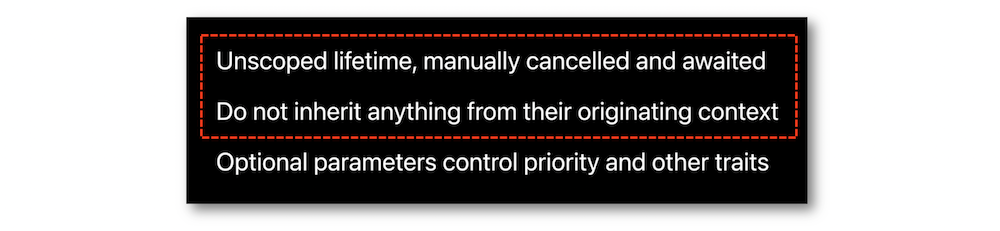

WWDC 2021: Asynchronicity and concurrency in iOSÂ 15
Find hereafter a detailed summary of four videos that belong to a taxonomy of some WWDC footages.
The original videos are available on the official Apple website (session 10133, session 10132, session 10134 and session 10254).
"Data races occur when two separate threads concurrently access the same mutable state. They are trivial to construct, but are notoriously hard to debug. Discover how you can stop these data races in their tracks with Swift actors, which help synchronize access to data in your code. Discover how actors work and how to share values between them. Learn about how actor isolation affects protocol conformances. And finally, meet the main actor, a new way of ensuring that your code always runs on the main thread when needed."
"Swift now supports asynchronous functions — a pattern commonly known as async/await. Discover how the new syntax can make your code easier to read and understand. Learn what happens when a function suspends, and find out how to adapt existing completion handlers to asynchronous functions."
"When you have code that needs to run at the same time as other code, it's important to choose the right tool for the job. We'll take you through the different kinds of concurrent tasks you can create in Swift, show you how to create groups of tasks, and find out how to cancel tasks in progress. We'll also provide guidance on when you may want to use unstructured tasks."
"Dive into the details of Swift concurrency and discover how Swift provides greater safety from data races and thread explosion while simultaneously improving performance. We'll explore how Swift tasks differ from Grand Central Dispatch, how the new cooperative threading model works, and how to ensure the best performance for your apps."
The various contents of this speech are indicated hereunder:
Most of the illustrations are parts of the Apple presentations and may be available at the Resources section inside the Overview sheet of each video.
Hereafter, the underlined elements lead directly to the playback of the WWDC video at the appropriate moment.
Swift Concurrency #
In order to improve the efficiency at different levels, the usual Grand Central Dispatch process has moved to the new Concurrency Model in iOSÂ 15 including:
-
A cooperative thread pool.
-
The async/await syntax that lets the compiler and the runtime be aware of a piece of code might suspend and resume execution while never using escaping closures as callbacks anymore.
-
A structured concurrency based on thewith a hierachical approach with a parent task and a given priority of execution.
Spawning a huge amount of threads may lead to dangerous situations.
A new cooperative thread pool has been introduced to ensure the number of created threads doesn’t exceed the number of CPU cores available.
It's recommended to activate the dedicated environment variable that points out the use of an unsafe blocking primitive under a debug runtime.
The power of concurrency relied on the timesharing that could unfortunately lead to in tough situations due to the context switches processing the results.
These thread context switches are replaced by the continuations for managing the resumption of work.
A continuation is the block of code that runs after the await and is put back on a thread’s stack when execution should resume.
Serialization and avoidance of data races are ensured by the Actor protocol detailed in the devoted part.
Async-await #
Based on the differences between functions that are async or not, the async-await syntax can also be applied to properties that can thus behave asynchronously.
Besides properties, the in-for loops can additionally include this syntax to turn their returns into asynchronous results.
Some explanations and examples are pointed out hereafter to find out the potential areas of implementations of this syntax.
Instead of using the completion handlers, the async-await syntax brings about less boilerplate code.

Adding the async-await syntax in a synchronous context may lead to some troubles if some cautiousness isn't taken into account.
An excellent way to keep control over an async process relies on the continuation notion that involves some caveats nevertheless.
The continuation has been introduced to replace the thread context switches for becoming the perfect place to insert the results from the completion handler using the withCheckedThrowingContinuation method if any errors are taken into account (consider the withCheckedContinuation method otherwise).
This part details the design of the await language feature to guarantee the new suspension and resumption in Swift concurrency.
Tasks #
This new feature in Swift is introduced through an example to point out its special connection with the new async/await syntax based on structured programming.
Tasks are of four different types that are described in details hereafter.
Async-let #
The async-let task is a concurrent binding whose evaluation is pretty much different from the usual let binding.
The task tree is an integral part of the structured concurrency while providing a special environment to its elements (priorities, cancellation, inheritance...).
Cancelling a task doesn't imply its complete cessation if it's already started but its results won't be needed anymore.
Moreover, when this situation occurs, the cancelled task informs its potential subtasks of their cancellation as well.
Group #
A task group is a form of structured concurrency that is designed to provide a dynamic amount of concurrency.
When a specific dynamic amount of concurency tasks is required, the task group is the type to be implemented using the withThrowingTaskgroup function to ceate child tasks thanks to the group's async method.
An example for downloading thumbnails highlights the new for-await loop to access an asynchronous sequence of values and explains the cancellation automation.
Manual cancellation of all tasks before exiting the block is also possible thanks to the cancelAll method applied to the group itself.
Unstructured #
An interesting example is introduced to deliver an appropriate way to use this kind of task and to define the context in which it can be inserted.
Cancellation for unstructured tasks isn't automatic and must be implemented to be taken into account.
Detached #

The combination of the structured concurrency inside of a detached task is carried out in an example performing the creation of a group with no error returns by using the withTaskGroup method.
Actors #
Set up concurrent programs may lead to different situations pointed out in a basic counter example:
-
Data races appear at first sight with a class object defining the counter.
-
Using value semantics instead of reference type brings about a new scenario that doesn't completely overcome the initial problem.
-
Finally, a new type comes in as actor to take advantage of synchronization with a shared mutable state and provide an appropriate solution for the previous downsides.
This new type reaches the Swift named types to provide another perspective for concurrently accessing data.
The actor properties create a synchronization mechanism that is completely safe.
Using actors can only be done from within an asynchronous context and this interaction becomes synchronous when running on the actor itself.
However, it's imperative to keep in mind that successive calls to a method handled by an actor element may lead to situations whose complete process must be managed to avoid useless operations and disappointed results.
Execution switching from one actor to another is called the actor hopping giving rise to the actor reentrancy notion that leads to a better scheduling and resource utilization.
Actors guarantee mutual exclusion while executing at most one method call at a time.
Isolation #
When conforming to a protocol that contains synchronous functions, an actor must prefix these overriden functions with the nonisolated keyword to be marked as an outside process that permits data races without referencing the mutable state on the actor.
Creating closures inside an actor doesn't imply a mandatory isolation to its context thanks to the Task model.
Accessing classes through an actor may lead to data races though while structs ensures safety in concurrency.
Concurrently processing in a safe way is secured with elements of Sendable types.
Sendable #

It's important to notice that @unchecked Sendable can also be used for a class to stop the IDE warnings if the necessary dispatch queues have been implemented to ensure a safe concurrency in the appropriate functions.
Main actor #
Using the @MainActor attribute indicates that the examined element is working on the main thread.
This attribute on a specific type ensures that its scope spreads all over the methods and properties of this type while giving the opportunity to get rid of it thanks to the nonisolated keyword.
It may be also highly useful to modify the code structure in order to avoid back and forth between a thread and the main actor.